在大数据时代下，我们借助机器学习、数据仓库、大数据平台等大数据技术手段，将运维产生的数据进行分析、处理，得出最佳运维策略，以期实现对故障的事先干预，将风险降低到最低，从而降低运维成本，提升运维效率，最终实现运维智能化。本文分享网易杭州研究院在这个领域的实践经验。
本文由作者授权发布，未经许可，请勿转载。
作者：席晶晶，网易杭州研究院运维与账号中心工程师
眼下，随着信息化、数字化的深入发展，技术飞速迭代，应用服务也不断升级，企业面临的运维压力也越来越大，传统运维受到了前所未有的挑战。
（1） 运维内容：传统的互联网运维的内容仅是关注软硬件、网络、应用系统及基础设备的运维，而当前将面临数十万台主机、容器，复杂的网络环境，以及复杂的部署环境：私有云、公有云、跨IDC混合部署。
（2） 运维工具：传统的互联网运维尽管也利用了工具实现了部分工作的自动化，但主要依赖人力，工作量较大，并效率低下，业务快速增长，技术飞速迭代，意味着工具也要顺势升级。
（3） 运维模式：7*24小时服务模式，PE\SA\DBA 成为了“救火式”英雄，监听着成千上万的监控指标，一旦故障出现，SA、PE、DBA、开发童鞋齐上阵，被故障牵着走，被动性强且风险高。
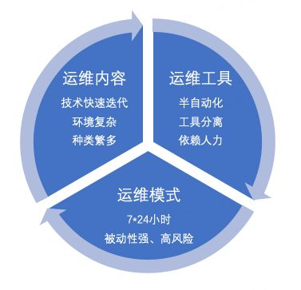
面对新的挑战，网易杭州研究院运维服务团队不仅要打造信息化、数字化的综合管理体系，为企业带来全方位IT运维服务，同时还要提供定制化、专业化、全链路、无死角的运维解决方案。在大数据时代下，我们借助机器学习、数据仓库、大数据平台等大数据技术手段，将运维产生的数据进行分析、处理，得出最佳运维策略，以期实现对故障的事先干预，将风险降低到最低，从而降低运维成本，提升运维效率，最终实现运维智能化。
AIOps即智能运维，是 Gartner 在2016年提出的概念，真正火起来是在这两年，这个概念提出后，各大厂都已经先后利用AIOps理念培养智能运维人才梯队，建设智能运维平台、打造智能运维体系。Gartner预测到2020年，将近50%的企业将会在他们的业务和 IT 运维方面采用 AIOps 。高效运维发起人萧田国在《AIOps实施之路》中指出了AIOps在效率提升、质量保障、成本优化提出了系列可应用方向以及实施AIOps需要具备的能力。
智能运维应用场景主要包括如下几个方面。
智能运维也会带来人员结构的变化，如下图所示。
网易杭研于2018年正式加入智能运维大营，拥抱变化，以实现全链路、无死角智能运维体系为目标，旨在利用AI的能力解决运维行业的问题：
1.解决重复造轮子的问题；
2.解决运维效率仍然低下的问题；
3.运维的数据没有得到合理应用的问题。
上图为故障管理全场景图，该图从服务部署、故障发生、故障发现、故障止损、根因诊断、故障恢复、故障关闭，完整的阐述应用监控的故障管理生命周期。
当前网易杭研实施中的智能运维产品形态如上图，主要包括五大模块：
· 故障预警：通过算法计算KPI曲线变化趋势，故障前发出故障预警；
· 故障告警：能对周期性变化指标进行预测和异常检测，且有告警分级；
· 告警合并：支持按照合适的维度对告警进行合并，展现概况信息；
· 根因分析：智能对故障根因进行分析，给出最可能的原因，辅助人做决策；
· 故障自愈：可以根据故障原因选择合适的故障自愈策略并执行，自动解决故障。
笔者自接触智能运维以来，也是三千烦劳丝，如何让运维“智能”起来？如何让AIOps结合网易现有运维体系实施落地? 又如何推进AIOps发展? 种种挑战考验着我们的团队。经过1年来不断探索、研究、试错，我们首先在监控方面突破，下面介绍如何从0到1建设AIOps应用-智能监控系统的心路历程。
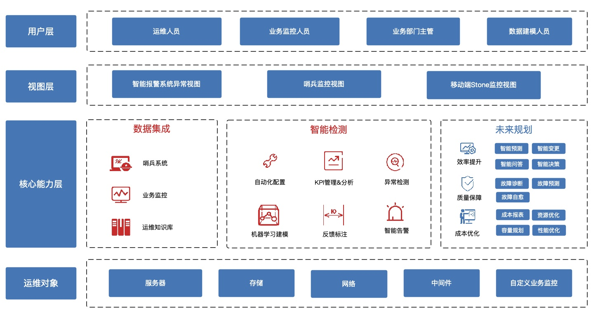
随着互联网，特别是移动互联网的高速发展，web服务已经深入到社会的各个领域，人们使用互联网搜索，购物，付款，娱乐等等。因此，保障web服务的稳定已经变的越来越重要。运维人员通过监控各种各样的关键性能指标（KPI）来判断服务、系统是否稳定，因为KPI如果发生异常，往往意味着与其相关的应用发生了问题。这些KPI可能包括：基础KPI及服务KPI，服务KPI是指能够反映Web服务的规模、质量的性能指标，例如，网页响应时间，网页访问量，连接错误数量等。基础KPI是指能够反映机器（服务器、路由器、交换机）健康状态的性能指标，例如，磁盘使用率，CPU使用率，内存使用率，磁盘IO，网卡吞吐率等。
这些KPI数据表现为时序序列，即一条指标曲线（后文统一称KPI曲线）。由此问题转化为对曲线的异常判断，KPI曲线可以简单分类下面三种类型：
周期型：
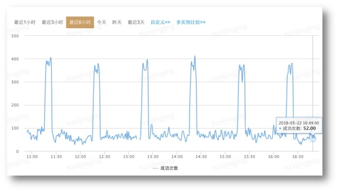
随机型：
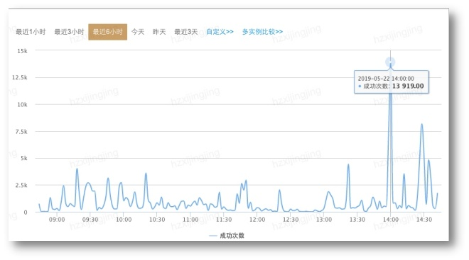
平稳型：
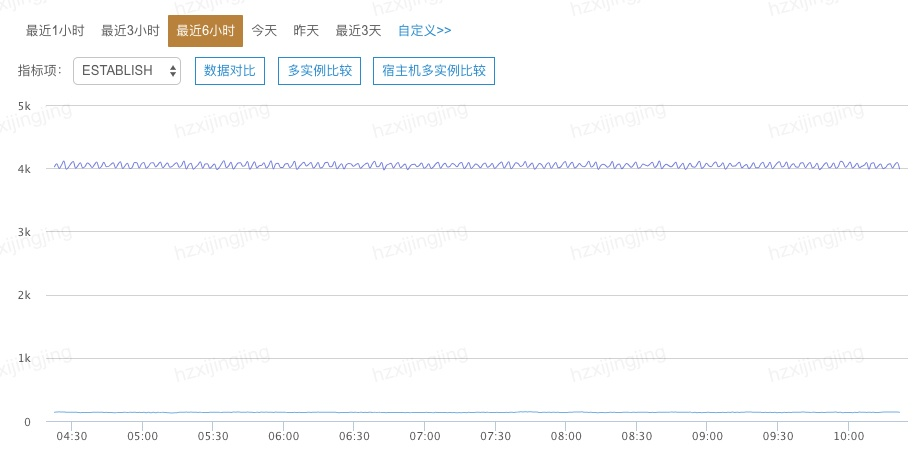
在网易杭研基于基础设施管理的CMDB系统-哨兵系统，通过哨兵 Agent将数据实时/采样的传输至哨兵服务端进行可视化及报警监控。监控系统主要采用规则判定的报警方式，设定上限、下限阈值，触发规则则发出报警，随着业务集成越来越多，体量也越来越大，规则报警也到了其瓶颈，主要有以下痛点：
（1）需要频繁调整阈值
case1：随着业务变化，已有的阈值适用性变差，当业务发生变动时，报警规则也需要及时调整；
case2：夜间与白天范围不一样，工作日与周末不一样，统一的阈值适用性较差。
（2）覆盖范围有限
传统的方式，需要针对指标的每一项进行设定报警规则，比如在DubboProviderCollector，每个方法对应的调用集群的量不一，需要独立配置报警规则，那么配置将会相当耗时且繁琐，并且很多Dubbo服务接口都是随业务随时新增或下线，很容易被忽视。
（3）无效报警过多
阈值规则报警的方式，往往会出现这样的情况，当阈值设定的太高，异常很难被发现，当阈值设定的太低，则会造成大量报警，造成报警风暴，真正有用的报警消息淹没在风暴中。
针对上述痛点，我们思考如何利用算法来突破传统的阈值报警局限性，于是调研了业界使用的各种异常检测算法。较为常见的算法包括逻辑回归、关联关系挖掘、聚类、决策树、随机森林、支持向量机、蒙特卡洛树搜索、隐式马尔科夫、多示例学习、迁移学习、卷积神经网络等，以及数学算法类：K-Sigma，Grubbs，Turkey，MeanPercent，Value，AR，MR，ARIMA。
通用异常检测流程：
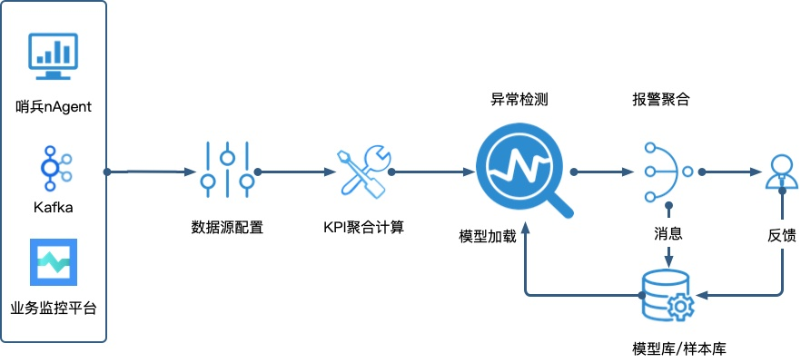
曾想使用一种或一类算法来解决所有KPI曲线的预测，而碰到业务情况远比我们想象要复杂，例如：首先面临各种不同曲线表现特征不一，同一类型的算法很难做到召回率整体提升；其二，在同样类型Dubbo调用异常 KPI曲线波动情况，在一些产品是可以接受的，但是在其他产品可能是不能接受的异常，可能在某业务在意的指标，在其他产品无需在意；第三，尽管想做到一个模型泛化兼容所有场景，但是所需特征工程工作量巨大，特征也很多。
有人说采用投票的方法，用一大堆算法同时预测，对于结果进行投票，少数服从多数，这种方式也是存在一定的缺陷，本身每个算法适用性不一样，那么势必在影响投票结果。网易杭研采用的是分类算法，即在不同的场景下采用一类算法进行预测，以减少误判率，我们调研和使用了上述部分算法：
机器学习类：
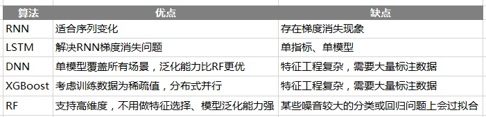
特征工程是机器学习中一块重要的环节，针对单一KPI表现的数据形态将逐一转换为数据特征，如下将数据特征归类如下5个方面：
1.统计特征 ：描述样本内相关的数学表现，例如：方差、均值、中位数、斜率、偏度、峰度等重要指标；
2.拟合特征 ：获取曲线的动态特征，根据曲线平稳或不平稳，采用不同模型获取预测值与实际值的差；
3.周期特征：利用滑动窗口，傅里叶转换，获取曲线中可能存在的季节性、周期性特征；
4.分类特征：基于曲线变换、小波变换、主成分分析等方式 获取曲线分类特征；
5.业务特征：KPI具有业务集群效应，工作日邮箱访问量，周末游戏访问量等业务特征。
由于篇幅有限，这里就不枚举所有特征。
数学算法类：
（1）恒定阈值类算法
恒定阈值的含义是表示均值基本恒定，标准差与均值比约等于0（即KPI曲线近似一条直线）。
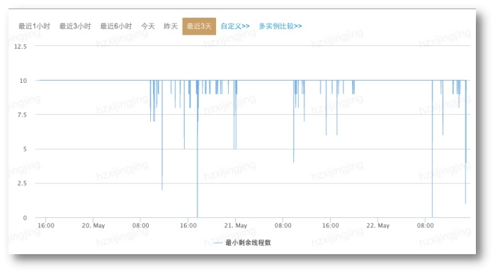
（2）突升突降类算法
突变的含义是发生了均值漂移
空间转换:
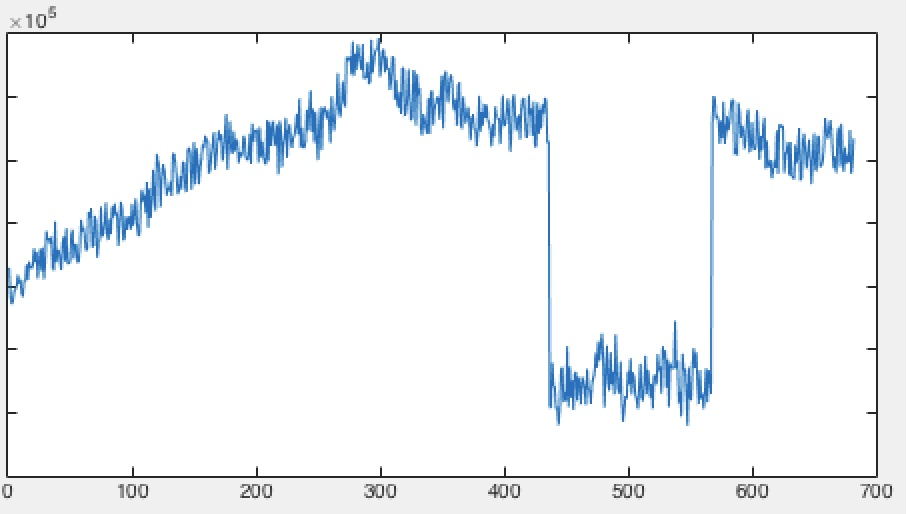
（3）同比算法
适用于周期性数据表现，每天同时刻的数据分布相似
参数估计：求正态分布的均值、方差
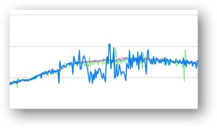
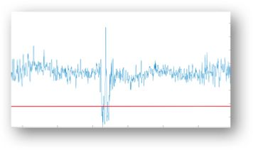